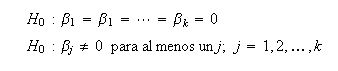
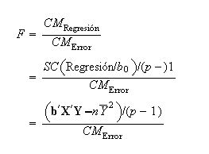
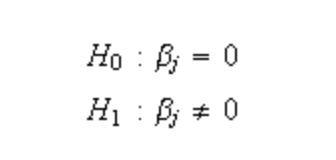
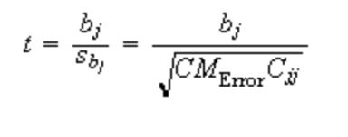
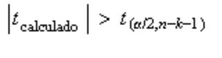
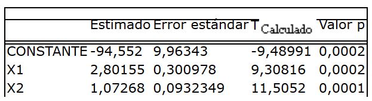
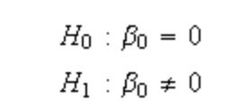

Prueba de significancia
La prueba de significancia de la regresión es una de la pruebas de hipótesis utilizadas para medir la bondad de ajuste del modelo. Esta prueba determina si existe una relación lineal entre la variable respuesta Y y alguna de las variables regresoras x1,x2,...xn La hipótesis estadística adecuada es:

Al rechazar la hipótesis nula se concluye que al menos una de las variables regresoras contribuye significativamente al modelo.La prueba estadística utilizada es:

La cual asumiendo que la hipótesis nula es cierta se distribuye F con k grados de libertad en el numerador y n-k-1 grados de libertad en el denominador. Se rechaza la hipótesis nula si el valor calculado de la estadística de prueba es mayor que el valor teórico de la distribución .
PRUEBA DE LA SIGNIFICANCIA PARA CADA COEFICENTE DE LA REGRESION
La prueba individual de un coeficiente de regresión puede se útil para determinar si:
1) Se incluye otra variable regresora.
2) se elimina una o más variables regresoras presentes en el modelo .
La adicion de variables regresoras en el modelo implica que la SCregresión incrementa y la SCerror disminuya.
pero se debe decidir si el incremento en la SCregrsión es tan significativo que justifique la inclusión de otra varable regresora en el modelo ,ya que la inclusión de variablesque no deberian ser incluidas puede aumentar la SCerror.
La hipótesis para probar la significancia de cualquier coeficiente de regresión es :

Si la hipótesis nula no es rechazada, es un indicador de que la variable regresora puede ser eliminada del modelo.
La prueba estadística para la hipótesis es :

donde Cjj es el elemento de la matriz (x´x)^-1 correspondiente a bj .
La prueba de estadística se distribuye t- Student con grados del libertad del error. La hipótesis nulase rechaza si :

Ejemplo (Adaptado de: Anderson & Sweeney, 2008)
Los programas estadísticos producen una tabla para la prueba de cada coeficiente

Los errores estándar de los parámetros son las raíces de los elementos de la diagonal de la matriz de varianza-covarianza del vector de parámetros estimados b
La primera fila prueba la hipótesis
